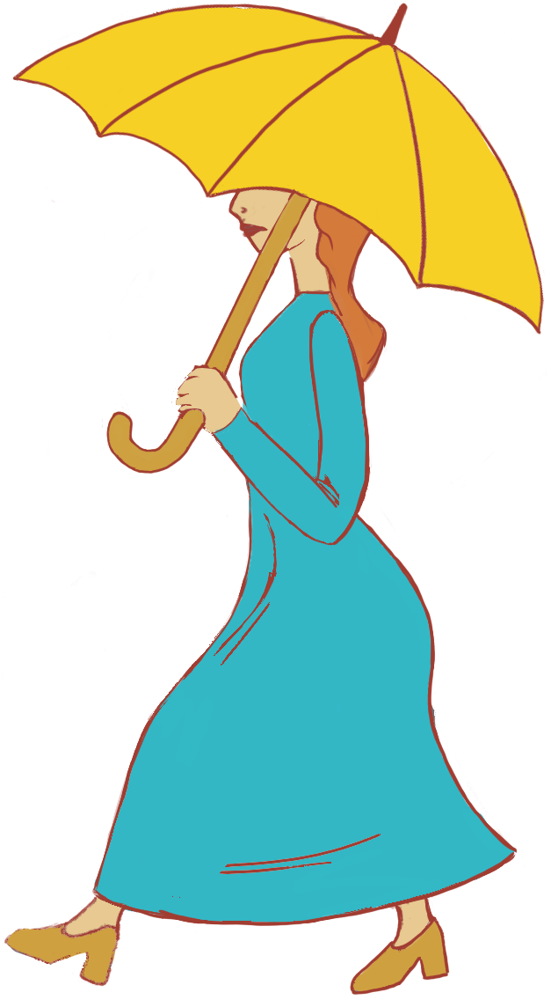

BRENDA ROMANATO
illustrator and creative developer
for the digital medium
In my spare time I like to create visual artworks for storytelling,
specially...
through COLOR
ILLUSTRATEmagic places


create COVERS for written stories
Chapter I - PETER BREAKS THROUGH
All children, except one, grow up. They soon know that they will grow up, and the way Wendy knew was this. One day when she was two years old she was playing in a garden, and she plucked another flower and ran with it to her mother. I suppose she must have looked rather delightful, for Mrs. Darling put her hand to her heart and cried, “Oh, why can’t you remain like this for ever!” This was all that passed between them on the subject, but henceforth Wendy knew that she must grow up. You always know after you are two. Two is the beginning of the end. Of course they lived at 14, and until Wendy came her mother was the chief one. She was a lovely lady, with a romantic mind and such a sweet mocking mouth. Her romantic mind was like the tiny boxes, one within the other, that come from the puzzling East, however many you discover there is always one more; and her sweet mocking mouth had one kiss on it that Wendy could never get, though there it was, perfectly conspicuous in the right-hand corner. The way Mr. Darling won her was this: the many gentlemen who had been boys when she was a girl discovered simultaneously that they loved her, and they all ran to her house to propose to her except Mr. Darling, who took a cab and nipped in first, and so he got her. He got all of her, except the innermost box and the kiss. He never knew about the box, and in time he gave up trying for the kiss. Wendy thought Napoleon could have got it, but I can picture him trying, and then going off in a passion, slamming the door. Mr. Darling used to boast to Wendy that her mother not only loved him but respected him. He was one of those deep ones who know about stocks and shares. Of course no one really knows, but he quite seemed to know, and he often said stocks were up and shares were down in a way that would have made any woman respect him. Mrs. Darling was married in white, and at first she kept the books perfectly, almost gleefully, as if it were a game, not so much as a Brussels sprout was missing; but by and by whole cauliflowers dropped out, and instead of them there were pictures of babies without faces. She drew them when she should have been totting up. They were Mrs. Darling’s guesses. Wendy came first, then John, then Michael. For a week or two after Wendy came it was doubtful whether they would be able to keep her, as she was another mouth to feed. Mr. Darling was frightfully proud of her, but he was very honourable, and he sat on the edge of Mrs. Darling’s bed, holding her hand and calculating expenses, while she looked at him imploringly. She wanted to risk it, come what might, but that was not his way; his way was with a pencil and a piece of paper, and if she confused him with suggestions he had to begin at the beginning again. “Now don’t interrupt,” he would beg of her. “I have one pound seventeen here, and two and six at the office; I can cut off my coffee at the office, say ten shillings, making two nine and six, with your eighteen and three makes three nine seven, with five naught naught in my cheque-book makes eight nine seven—who is that moving?—eight nine seven, dot and carry seven—don’t speak, my own—and the pound you lent to that man who came to the door—quiet, child—dot and carry child—there, you’ve done it!—did I say nine nine seven? yes, I said nine nine seven; the question is, can we try it for a year on nine nine seven?” “Of course we can, George,” she cried. But she was prejudiced in Wendy’s favour, and he was really the grander character of the two. “Remember mumps,” he warned her almost threateningly, and off he went again. “Mumps one pound, that is what I have put down, but I daresay it will be more like thirty shillings—don’t speak—measles one five, German measles half a guinea, makes two fifteen six—don’t waggle your finger—whooping-cough, say fifteen shillings”—and so on it went, and it added up differently each time; but at last Wendy just got through, with mumps reduced to twelve six, and the two kinds of measles treated as one. There was the same excitement over John, and Michael had even a narrower squeak; but both were kept, and soon, you might have seen the three of them going in a row to Miss Fulsom’s Kindergarten school, accompanied by their nurse.

Chapter I - The Cyclone
Dorothy lived in the midst of the great Kansas prairies, with Uncle Henry, who was a farmer, and Aunt Em, who was the farmer’s wife. Their house was small, for the lumber to build it had to be carried by wagon many miles. There were four walls, a floor and a roof, which made one room; and this room contained a rusty looking cookstove, a cupboard for the dishes, a table, three or four chairs, and the beds. Uncle Henry and Aunt Em had a big bed in one corner, and Dorothy a little bed in another corner. There was no garret at all, and no cellar—except a small hole dug in the ground, called a cyclone cellar, where the family could go in case one of those great whirlwinds arose, mighty enough to crush any building in its path. It was reached by a trap door in the middle of the floor, from which a ladder led down into the small, dark hole. When Dorothy stood in the doorway and looked around, she could see nothing but the great gray prairie on every side. Not a tree nor a house broke the broad sweep of flat country that reached to the edge of the sky in all directions. The sun had baked the plowed land into a gray mass, with little cracks running through it. Even the grass was not green, for the sun had burned the tops of the long blades until they were the same gray color to be seen everywhere. Once the house had been painted, but the sun blistered the paint and the rains washed it away, and now the house was as dull and gray as everything else. When Aunt Em came there to live she was a young, pretty wife. The sun and wind had changed her, too. They had taken the sparkle from her eyes and left them a sober gray; they had taken the red from her cheeks and lips, and they were gray also. She was thin and gaunt, and never smiled now. When Dorothy, who was an orphan, first came to her, Aunt Em had been so startled by the child’s laughter that she would scream and press her hand upon her heart whenever Dorothy’s merry voice reached her ears; and she still looked at the little girl with wonder that she could find anything to laugh at. Uncle Henry never laughed. He worked hard from morning till night and did not know what joy was. He was gray also, from his long beard to his rough boots, and he looked stern and solemn, and rarely spoke. It was Toto that made Dorothy laugh, and saved her from growing as gray as her other surroundings. Toto was not gray; he was a little black dog, with long silky hair and small black eyes that twinkled merrily on either side of his funny, wee nose. Toto played all day long, and Dorothy played with him, and loved him dearly. Today, however, they were not playing. Uncle Henry sat upon the doorstep and looked anxiously at the sky, which was even grayer than usual. Dorothy stood in the door with Toto in her arms, and looked at the sky too. Aunt Em was washing the dishes. From the far north they heard a low wail of the wind, and Uncle Henry and Dorothy could see where the long grass bowed in waves before the coming storm. There now came a sharp whistling in the air from the south, and as they turned their eyes that way they saw ripples in the grass coming from that direction also.

Chapter I - Begins to Unfold the Tale of the Lions by Describing the Lion of the Tale.
We trust, good reader, that it will not cause you a feeling of disappointment to be told that the name of our hero is Brown—Tom Brown. It is important at the beginning of any matter that those concerned should clearly understand their position, therefore we have thought fit, even at the risk of throwing a wet blanket over you, to commence this tale on one of the most romantic of subjects by stating—and now repeating that our hero was a member of the large and (supposed to be) unromantic family of “the Browns.” A word in passing about the romance of the family. Just because the Brown family is large, it has come to be deemed unromantic. Every one knows that two of the six green-grocers in the next street are Browns. The fat sedate butcher round the corner is David Brown, and the milkman is James Brown. The latter is a square-faced practical man, who is looked up to as a species of oracle by all his friends. Half a dozen drapers within a mile of you are named Brown, and all of them are shrewd men of business, who have feathered their nests well, and stick to business like burrs. You will certainly find that several of the hardest-working clergymen, and one or more of the city missionaries, are named Brown; and as to Doctor Browns, there is no end of them! But why go further? The fact is patent to every unprejudiced person. Now, instead of admitting that the commonness of the name of Brown proves its owners to be unromantic, we hold that this is a distinct evidence of the deep-seated romance of the family. In the first place, it is probable that their multitudinosity is the result of romance, which, as every one knows, has a tendency to cause men and women to fall in love, and marry early in life. Brown is almost always a good husband and a kind father. Indeed he is a good, steady-going man in all the relations of life, and his name, in our mind at least, is generally associated with troops of happy children who call him “daddy,” and regard him in the light of an elephantine playmate. And they do so with good reason, for Brown is manly and thorough-going in whatever he undertakes, whether it be the transaction of business or romping with his children. But, besides this, the multitudinosity of the Browns cuts in two directions. If there are so many of them green-grocers, butchers, and milkmen—who without sufficient reason are thought to be unromantic—it will be found that they are equally numerous in other walks of life; and wherever they walk they do so coolly, deliberately, good-humouredly, and very practically. Look at the learned professions, for instance. What a host of Browns are there. The engineers and contractors too, how they swarm in their lists. If you want to erect a suspension bridge over the British Channel, the only man who is likely to undertake the job for you is Adam Brown, C.E., and Abel Brown will gladly provide the materials. As to the army, here their name is legion; they compose an army of themselves; and they are all enthusiasts—but quiet, steady-going, not noisy or boastful enthusiasts. In fact, the romance of Brown consists very much in his willingness to fling himself, heart and soul, into whatever his hand finds to do. The man who led the storming party, and achieved immortal glory by getting himself riddled to death with bullets, was Lieutenant Brown—better known as Ned Brown by his brother officers, who could not mention his name without choking for weeks after his sad but so-called “glorious” fall. The other man who accomplished the darling wish of his heart—to win the Victoria Cross—by attaching a bag of gunpowder to the gate of the fortress and blowing it and himself to atoms to small that no shred of him big enough to hang the Victoria Cross upon was ever found, was Corporal Brown, and there was scarcely a dry eye in the regiment when he went down. Go abroad among the barbarians of the earth, to China, for instance, and ask who is yonder thick-set, broad-chested man, with the hearty expression of face, and the splendid eastern uniform, and you will be told that he is Too Foo, the commander-in-chief of the Imperial forces in that department. If, still indulging curiosity, you go and introduce yourself to him, he will shake you heartily by the hand, and, in good English, tell you that his name is Walter Brown, and that he will be charmed to show you something of Oriental life if you will do him the favour to take a slice of puppy dog in his pagoda after the review! If there is a chief of a hill tribe in Hindustan in want of a prime minister who will be able to carry him through a serious crisis, there is a Brown at hand, who speaks not only his own language, but all the dialects and languages of Hindustan, who is quite ready to assume office. It is the same at the diggings, whether of Australia, California, or Oregon; and we are persuaded that the man whose habitation is nearest to the pole at this moment, whether north or south, is a Brown, if he be not a Jones, Robinson, or Smith! Need more be said to prove that this great branch of the human family is truly associated with all that is wild, grand, and romantic? We think not; and we hope that the reader is now somewhat reconciled to the fact—which cannot be altered, and which we would not alter if we could—that our hero’s name is Tom Brown.
among my favourite things to paint, there are
PORTRAITS
self portrait made with Krita
reach me out in: